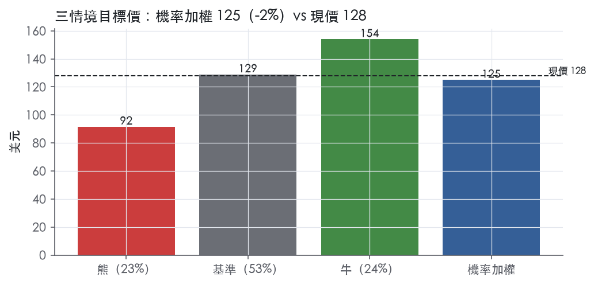
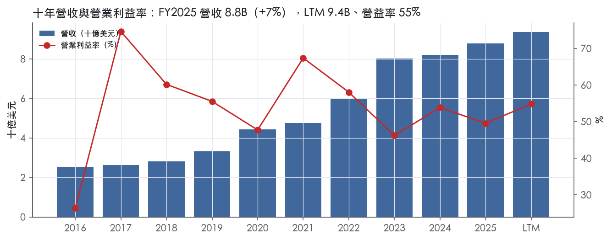
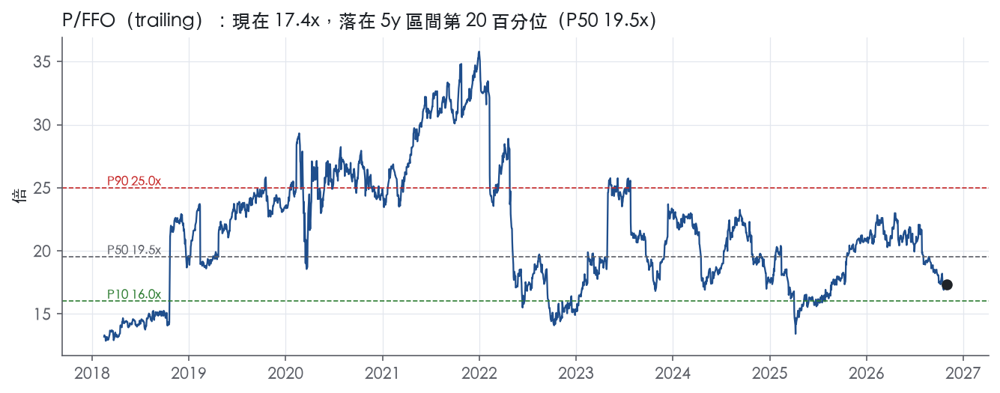
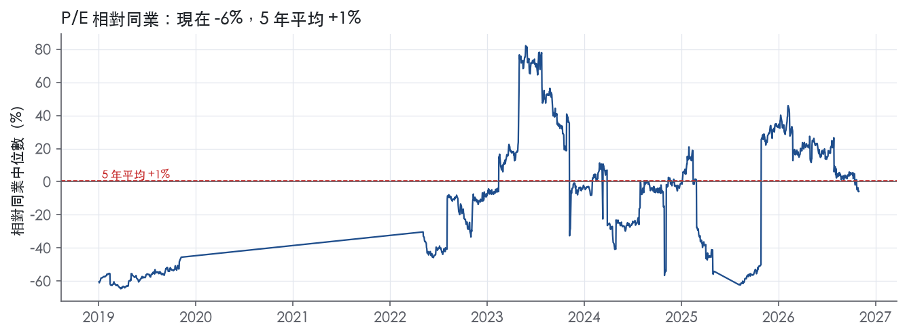
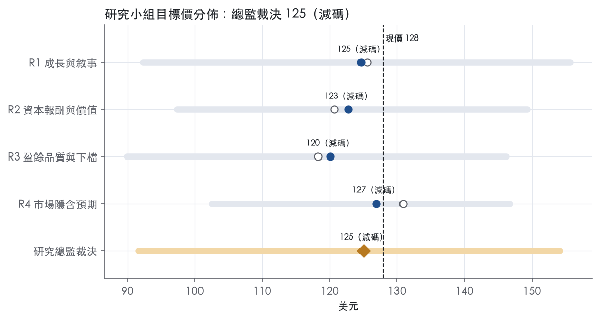
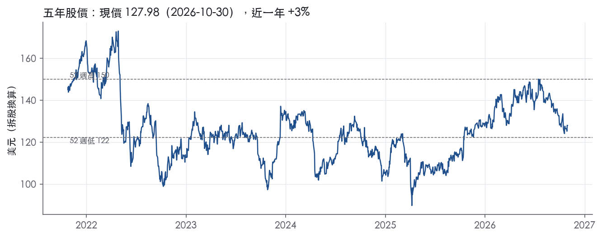

評等總表 › 不動產 › PLD
利得退潮倍數回P50，報酬低於門檻減碼｜評等 減碼｜目標價 125
| 報告日 | 評等 | 目標價 | 當時股價 | 超額報酬 |
|---|---|---|---|---|
| 2026-10-30 | 減碼 | 125 | 128 | -9.0% |
| 2026-10-12 | 減碼 | 133 | 132 | -6.8% |
| 快評 | 動作 | 結論 |
|---|---|---|
| 2026-10-15 | 維持 | 營益低於預測9%，利得回落，維持減碼 |
| 評等 | 減碼 |
| 12 個月目標價 | 125 美元 |
| 現價 | 127.98 美元（2026-10-30） |
| 預期報酬 | 股價 -2.3%＋股息 3.3%＝總報酬 +1.0%；同業籃門檻 10.0%，超額 -9.0% |
| 估值方法 | P/FFO 18.1x，套在第 5–8 季的FFO（也就是一年後的未來四季） |
| 三情境 | 熊 92／基準 129／牛 154 |
| 研究流程 | 四位研究員兩輪辯論＋研究總監裁決 |
| 資料來源 | SEC EDGAR XBRL、Tiingo、FRED（全免費） |
利得退潮倍數回P50，報酬低於門檻減碼（研究總監裁決，四位研究員兩輪辯論後）
評等 減碼｜12 個月目標價 125 美元（總監三情境機率加權 126 與研究員中位數 124 各半）｜現價 127.98（2026-10-30）
預期報酬：股價 -2.3%＋股息 3.3%＝總報酬 +1.0%。同業籃門檻 10.0%，超額 -9.0%。
估值方法：P/FFO 18.1x，套在第 5–8 季的FFO（也就是一年後的未來四季）。三情境：熊 92（23%）／基準 129（53%）／牛 154（24%）。
什麼會讓研究總監改變看法：2027 年 1 月指引開發利得上緣 ≥700M 且現金同店 NOI 中點 ≥6.5%，我把營益率回到 48% 以上、倍數上移到 P50–P75 並回中性；出租率跌破 95.25% 或 FY2026 10-K 出現持有期減值，則往熊情境移動。
| 過去四季（實際，FY2026Q3） | 未來四季 | 第 5–8 季 | 第 9–12 季 | |
|---|---|---|---|---|
| 營收（B） | 9.4B | 10.1B | 10.8B | 11.5B |
| 營收成長 | 7.2% | 7.5% | 7.0% | 6.5% |
| 營業利益率 | 54.8% | 47.0% | 46.5% | 46.0% |
| 每股 FFO（美元） | 7.52 | 6.72 | 7.12 | 7.50 |
| FFO 成長 | 21.4% | -10.6% | 6.0% | 5.4% |
| 每股股息（美元） | 4.22 | 4.22 | 4.22 | 4.22 |
| EPS（美元） | 4.53 | 3.61 | 3.84 | 4.05 |
| P/FFO（現價） | 17.0x | 19.0x | 18.0x | 17.1x |
| 股息殖利率（現價） | 3.3% | 3.3% | 3.3% | 3.3% |
過去四季為申報數字；預測為研究總監的假設、程式計算。倍數與殖利率都用現價計算，用來看現價對應各期獲利的高低。
| 項目 | 上次（2026-10-13） | 這次（2026-11-01） | 變動 |
|---|---|---|---|
| 評等 | 減碼 | 減碼 | ＝ |
| 機率加權目標價（美元） | 133 | 125 | -5.7% |
| 超額報酬 | -6.8% | -9.0% | -2.2 pp |
| 目標倍數 | 18.9x | 18.1x | — |
| 未來四季營收成長 | 7.3% | 7.5% | +0.2 pp |
| 未來四季營益率 | 47.5% | 47.0% | -0.5 pp |
| 未來四季 EPS（美元） | 3.68 | 3.61 | -1.7% |
| 熊／基準／牛機率 | 23／53／24 | 23／53／24 | — |
程式計算；「未來四季」各自從當次報告的資料起點算。研究總監逐點說明見第八章「與上次報告比較」。
| 情境 | 機率（歷史） | 故事 | 未來四季營收成長 | 第 5–8 季營益率 | 倍數 | 目標價 | 股價漲跌 |
|---|---|---|---|---|---|---|---|
| 熊 | 23%（19%） | 對應風險表第 2 條（開發／資料中心減值，持有期縮短、價值創造 39M 對 169M）疊加第 1 條（利率上升壓縮倍數、下行路徑利差 2.30 凍結交易市場），市場租金轉負侵蝕重訂空間、出租率破 95.25%，倍數落到前瞻帶 P10；R3 的 15.0x 破 P10 無額外理由，調回 15.2x | 4.0% | 41.0% | 15.2x | 92 | -28.4% |
| 基準 | 53%（55%） | 同店 NOI 7% 上下複利、重訂空間逐年兌現，開發與處分利得由 2026 年高檔退潮，債務續增墊高利息，市場付前瞻帶 P50 | 7.5% | 46.5% | 18.1x | 129 | 0.7% |
| 牛 | 24%（26%） | 資料中心已取得電力轉成建後租約、Contributions 與開發利得回到 FY2024–25 水準，走本行上行路徑，倍數回前瞻帶 P75；營收由 R1 的 9% 壓回有機上限 8.5% | 8.5% | 50.5% | 19.9x | 154 | 20.4% |
目標價由程式依研究總監的驅動與倍數計算；機率由研究總監給定。括號內是歷史頻率：把這檔股票過去十年 12 個月報酬的波動形狀，置中在基準情境，結果落在各情境附近的比例。

四位研究員用不同方法各自估值，回應研究總監的質疑後交出第二輪，最後由總監逐點裁決。各研究員的主張見第七章，裁決理由見第八章，完整論證見《研究底稿》。
| 立場（一輪→二輪） | 加權目標價（一輪→二輪） | 評等（一輪→二輪） | 第二輪倍數 | 熊～牛目標價 | |
|---|---|---|---|---|---|
| R1 成長與敘事 | 中性→看空 | 126→125 | 減碼→減碼 | 17.5x | 92～156 |
| R2 資本報酬與價值 | 看空→中性 | 121→123 | 減碼→減碼 | 18.1x | 97～149 |
| R3 盈餘品質與下檔 | 中性→看空 | 118→120 | 減碼→減碼 | 17.5x | 90～146 |
| R4 市場隱含預期 | 中性→看空 | 131→127 | 中立→減碼 | 18.4x | 102～147 |
| 研究總監裁決 | 看空 | 125 | 減碼 | 18.1x | 92～154 |
目標價由程式依各自的驅動與倍數計算；評等＝機率加權總報酬 − 同業籃門檻。
Prologis 是全球物流地產的龍頭業者，在20個國家、四大洲的高門檻、高成長市場經營¹。公司以自管REIT形式持有並開發現代物流設施，並提供整合基礎設施解決方案，協助客戶優化倉儲營運¹。公司投資組合達13億平方英尺，服務約6,500個客戶，主要分布於B2B與零售／線上履行兩大類別²。客戶群涵蓋國際、全國、區域及地方物流使用者，橫跨多個產業，為終端消費者提供多元商品¹。本質上Prologis賺的是倉儲租金（收租型現金流）加上管理第三方資本賺取的管理費與績效獎金（輕資產收費型現金流）兩條腿。
公司業務分為兩個可報告分部：不動產（出租營運與開發）與策略資本¹。出租營運是最大組成部分，一般貢獻合併營收、盈餘與FFO的90%至95%¹；2025年新簽租約的加權平均租期為70個月，營收成長的主要驅動力是在租約到期時將現有租金滾動調整至市場租金水準¹。開發業務聚焦興建現代物流設施，並選擇性擴展至資料中心開發，透過取得電力與簽訂建後租賃合約推進¹。策略資本分部透過與機構投資人共組的共同投資合資企業，收取資產管理費、物業管理費及績效獎金（promotes），一般貢獻合併營收、盈餘與FFO（不含promotes）的5%至10%，營收主要產生於美國以外地區¹。地理權重上，依2026年第三季資料，美國貢獻NOI的84%，歐洲9%，其他美洲5%，亞洲2%²。土地儲備方面，公司測算合併土地及其他地產投資（含選擇權與Covered Land Plays）具備支持426億美元（O&M基礎）新開發建築總預期投資（TEI）的潛力¹；截至2026年9月底，土地建出潛力（TEI）為39.7B美元²，資料中心電力管線已鎖定或進入後期階段共5.8GW²。策略資本業務管理的未合併共同投資合資企業，截至2025年底帳面總值達62.4B美元、合計5.62億平方英尺¹；截至2026年第三季，總資產管理規模（Gross AUM）為238B美元²。出租營運仍是現金流主力、開發與策略資本是成長與估值溢價來源。
客戶集中度不高、分散於各產業，是典型REIT的風險管理特徵。截至2025年底，不動產分部（合併口徑）有超過4,000個客戶，佔用6.49億平方英尺物流營運物業；若以O&M（owned and managed）口徑計算則有6,500個客戶，佔用13億平方英尺¹。前25大客戶中，合併口徑佔淨有效租金（NER）的23.7%，O&M口徑佔21.6%；最大客戶Amazon在合併口徑佔NER的6.3%，O&M口徑佔5.3%¹。公司物業多定位於供應鏈關鍵節點，包括鄰近城市以支援當日配送的Last Touch®設施，以及鄰近主要海港與多式聯運樞紐的進口與全國配送中心¹。策略資本分部的「客戶」是合資夥伴與投資人，截至2025年底私募股權合資企業共有159個投資人¹。地理上美國仍是絕對核心（NOI佔比84%），歐洲與其他美洲是次要貢獻來源，亞洲佔比最小。
過去四個季度營收與FFO持續成長，淨利波動主要受處置利得與匯兌影響。2025年第三季（對比基準季）：租金及其他營收2,064M美元、策略資本營收150M美元，合計總營收2,214M美元，歸屬普通股淨利763M美元、每股0.82美元，Core FFO每股1.49美元²。2026年第一季：Core FFO每股為1.63與1.59區間之前的基期（六個月合計Core FFO為2,999.6M美元），淨利歸屬普通股2,041.3M美元（六個月累計）³。2026年第二季：租金及其他營收2,183M美元、策略資本營收242M美元，合計總營收2,425M美元，淨利歸屬普通股東1,061M美元、每股1.13美元，Core FFO每股1.63美元，AFFO每股對應為1,323M美元³；同期年度NOI（annualized）達7.0B美元，開發穩定化帶來價值創造740M美元，資料中心電力管線5.8GW，市值（Market Equity）129B美元³。2026年第三季：租金及其他營收2,224M美元、策略資本營收164M美元，合計總營收2,388M美元，歸屬普通股淨利816M美元、每股0.86美元，Core FFO每股1.60美元，Adjusted EBITDA為2,081M美元²；年化NOI升至7.2B美元，開發穩定化價值創造610M美元，Gross AUM達238B美元，市值126B美元²。公司對2026全年給出的指引為：歸屬普通股淨利每股4.05–4.15美元，Core FFO每股6.25–6.29美元，Prologis Share平均occupancy為95.25%–95.50%，現金同店NOI成長7.00%–7.50%²。資料包顯示FY2026Q3單季營收2.39B美元、年增7.8%，營益率43.8%，但FCF為-0.70B美元（ltm/季表 等），顯示現金流波動大於損益表波動。
公司將成長歸因於五大差異化能力：投資組合品質與規模、透過開發創造價值的能力、策略資本業務、深厚的客戶關係，以及強健的資產負債表¹。在租金成長方面，公司表示2025年租約到期重訂使O&M份額淨有效租金增加約50%，且其份額的剩餘租約市場重訂空間（mark-to-market）約為18%，即使市場租金不再上漲，未來幾年仍可推升租金收入¹。在開發創造價值方面，公司透過直接擁有土地、選擇權策略或Covered Land Plays取得土地，並正利用能源採購策略，將部分物流用地轉換為具備能源供應能力的資料中心開發案¹。在策略資本優勢方面，公司共同投資合資企業提供第三方資本，使公司能擴大O&M投資組合規模、協助自我融資開發活動，並產生可觀的管理費收入，計畫透過擴大既有及新合資企業的資產管理規模來成長此業務¹。資產負債表方面，截至2025年底，合併債務加權平均剩餘期限為9年、加權平均利率3.2%，可用流動性達7.6B美元¹。公司自己的論述清楚指向「租金重訂價差紅利＋開發轉data center＋策略資本收費規模化」三引擎並行。考慮到目前trailing P/E為28.3x、EV/EBITDA為19.6x，均落在過去五年偏低分位（約17–26%分位），市場目前對這三個引擎的定價相對保守。數據中心電力管線5.8GW與土地TEI 39.7B美元是觀察未來兩年增量成長最直接的先行指標。

依本部評級標準，Prologis 評為「無護城河」：程式算的 ROIC 十年平均 5.7%，低於資本成本代理值 10.0%，有資料的 9 年中沒有一年高於資本成本，我們沒有把握未來 5 年內會翻轉。這不代表公司沒有競爭優勢。它在區位、資金成本與第三方資本平台上確實領先同業，但這些優勢目前保住的是市佔與成長，還沒有轉成高於資本成本的投入資本報酬。ROIC 標準差只有 1.1%，區間 4.4% 至 7.7%，報酬水準低但穩定，所以趨勢判為穩定。
最站得住的是效率規模，形式是稀缺區位帶來的局部寡占，但證據強度只到中等。公司稱其物業位於「markets with high population densities, growing consumption and significant barriers to entry」，並包括 Last Touch® 設施¹。這些 infill 與 Last Touch® 設施「located within and adjacent to major cities to ensure same-day delivery to consumers」¹。土地與再開發儲備可支持 O&M 基礎 42.6B 美元的 TEI，公司另有內部的政府、社區事務與 entitlement 團隊¹。城市周邊可開發用地與許可取得本身就是進入門檻，這是效率規模的核心證據。
第二是成本優勢，主要落在資金成本與採購兩項。截至 2025 年底，合併債務加權平均剩餘期限 9 年、加權平均利率 3.2%，可用流動性 7.6B 美元¹。公司稱具備「ability to procure high demand construction materials at a lower cost」，並能取得電力與資料中心設備¹。十個未合併共同投資合資企業的營運組合帳面總值 62.4B 美元，第三方資本讓公司以較少自有資金擴張規模，同時收取管理費¹。G&A 可隨規模攤薄，公司預期 G&A 佔不動產投資的比例會繼續下降¹。
第三是轉換成本，但只在策略資本端成立，租戶端偏弱。策略資本業務由 94% 的開放式基金、長期基金與三個公開掛牌載體組成，私募股權合資企業共有 159 個投資人¹。開放式與長期結構讓機構資金黏著度高，構成資產管理費收入的轉換成本。租戶端的 2025 年新租約加權平均租期為 70 個月¹。這是合約鎖定，不是結構性轉換成本，租約到期後客戶仍可比價搬遷。
無形資產與網路效應找不到具體證據，不列入。
看不到，數字直接否定了任何高於資本成本的護城河主張。ROIC 平均減資本成本為 -4.3%，9 年中 0 年高於資本成本。最高的一年是 FY2017 的 7.7%，也沒有碰到 10.0% 的門檻。營業利益率十年平均 54.0%、標準差 12.4%，區間 26.4% 至 74.6%。利潤率絕對水準高，但波動大，主要來自處置與資產注入合資的利得，不是穩定定價權的表現。
定性證據與數字之間存在衝突。公司稱 2025 年租約到期重訂使淨有效租金上升約 50%，剩餘 mark-to-market 約 18%，且「positive rent change … in every quarter since 2013」¹。這顯示它有向租戶提價的能力。但 FY2022 至 FY2023 資本支出佔營收 75.3% 與 80.0%，同期 ROIC 降到 6.1% 與 4.4%。提價帶來的增量被以市價取得的資產基礎稀釋掉了。
我們維持「無」而不上調為「窄」，原因是 10.0% 代理值對一家債務利率 3.2% 的 REIT 可能偏高，但我們沒有可引用的 REIT 專屬資本成本數字，不能用推測去推翻程式結果。
最大威脅是新供給與分散的競爭，會直接壓縮租金重訂空間。公司自承「Real estate ownership is highly fragmented」，並指出低價物流空間可能影響出租率與租金，在經濟不確定或新供給高峰時影響尤甚¹。公司也承認近幾季出現「lower or even negative market rental growth」¹。市場租金一旦長期走平，18% 的 mark-to-market 消化完之後，有機成長的主要引擎就會熄火。
第二是資金成本優勢收斂。10 年期公債殖利率 4.98%，3.2% 的存量低息債到期後只能以較高利率再融資，這會削弱目前最明確的成本優勢。
第三是客戶集中與資本密集轉型。Amazon 佔合併口徑 NER 的 6.3%¹。資料中心開發需要大量資本投入，若報酬率沒有高於物流本業，只會再壓低整體 ROIC。
護城河不支持目標倍數相對同業溢價，建議以同業持平作為基準。ROIC 長期低於資本成本，意味著成長本身不創造超額價值，不應以「品質溢價」名義上調倍數或拉長高成長期。若估值研究員要給溢價，理由必須是開發儲備與策略資本收費的成長，而且要用可驗證的成長假設單獨支撐，不能掛在護城河上。
| 指標 | 最新 | 十年平均 | 標準差 | 最低 | 最高 |
|---|---|---|---|---|---|
| ROIC | 4.8% | 5.7% | 1.1% | 4.4% | 7.7% |
| 營業利益率 | 49.6% | 54.0% | 12.4% | 26.4% | 74.6% |
| FCF 利潤率 | 15.7% | 24.5% | 25.7% | -13.0% | 64.4% |
| ROE | 6.2% | 7.5% | 1.6% | 5.4% | 10.8% |
程式計算。資本成本代理值（10 年債＋5%）：10.0%；ROIC 平均減資本成本：-4.3%；ROIC 有資料的 9 年中，高於資本成本 0 年。
PLD 的營業現金流對淨利比率 LTM 1.28x、十年平均 1.35x，應計比率長期為負值，顯示淨利沒有靠應計灌水【判，量化底稿】。但自由現金流／淨利 LTM 僅 0.35x、近三年平均只有 0.19x，紅燈成立，原因是開發型 REIT 的資本支出與開發投入持續吃掉現金。淨負債／EBITDA LTM 4.23x 高於 3.00x 的紅燈門檻，是結構性而非一次性問題【判，量化底稿】。整體評級落在「中」，因為紅旗可被解釋（開發型 REIT 的資本循環＋處分收益驅動淨利波動），但現金留存能力偏弱、槓桿偏高是真實限制。
CFO 持續覆蓋淨利，FY2025 CFO 5.01B、淨利 3.33B，CFO／淨利 >1x【資料包 FY2025】。LTM 現金流量摘要（9M2026 對比 9M2025）：淨現金來自營業活動 5,008M（FY2025 全年，10-K）⁴，顯示本業現金生成能力沒有退化。問題在扣掉資本支出後：FY2023 FCF 為 -1.05B、FY2022 為 -0.37B、FY2020 為 -0.14B，近三年平均 FCF／淨利僅 0.19x，顯示開發與資本支出長期侵蝕自由現金【判，量化底稿】。10-K 說明近期開發投入規模：於 2025 年底開發портфолио投資基礎為 3.0B 美元、完工後總投資額（TEI）為 5.1B 美元，尚需再投入約 2.1B 美元⁴。這解釋了 FCF 偏低不是盈餘灌水，而是資本循環型業務的特性：資產賣掉變現金、蓋新的再吃掉現金。公司在 2025 年處分開發地與其他不動產交易淨收益合計約 944M 美元（開發用地處分 258M ＋其他處分 686M）⁴，這些收益直接計入 GAAP 淨利與營業利益，是 PLD 商業模式常態的一部分而非異常，但估值時仍需意識到這部分盈餘的「現金兌現時機」與資本支出需求是連動的。
公司 Core FFO 架構從 GAAP 淨利出發，主要加回三類項目：第一，不動產相關折舊與攤銷，9M2026 為 2,052,673 千美元（約 2.05B）、9M2025 為 1,896,978 千美元（約 1.90B）²；第二，扣除其他不動產處分收益（非開發土地），9M2026 為 358,450 千美元（約 358M）²；第三，未實現外幣／衍生工具損益與遞延所得稅，9M2026 分別為 -6,911 千美元與 57,839 千美元²。Core FFO 再進一步扣除開發用地處分收益 423,717 千美元（9M2026，約 424M）與提早清償債務損益等一次性項目²。9M2026 Core FFO 為 4,544,193 千美元（約 4.54B）、AFFO 為 4,002 千美元級別（表列單季 AFFO 1,207M，9M 數字需查全文）²。SBC（equity-based compensation）FY2025 為 185M 美元、FY2024 為 232M 美元⁴，計入 Rental Expenses、Strategic Capital Expenses 及 G&A，本系統未加回，SBC／營收 LTM 2.2% 屬低檔【量化底稿】。折舊與攤銷加回是 REIT 慣例、合理反映不動產計價方式與 GAAP 會計處理的差異；但處分收益（開發與非開發）屬於真實現金流入，只是波動大、不具可持續性，分析師應把這塊當作「資本循環收益」而非「核心租金盈餘」看待。
總負債持續攀升，FY2025 淨負債 33.89B（資料包），9M2026 總債務已達 36.83B（資產負債表，2026-09-30）²。利率結構分散於多幣種：歐元佔 35.1%、美元佔 43.9%（FY2025 年底），加權平均有效利率 3.2%、平均到期年限 9 年⁴。公司在 2025 年發行 3.4B 美元優先票據，加權平均利率 4.2%，較舊債更貴，反映升息環境下再融資成本上揚⁴。流動性方面，2025 年底總可動用流動性 7.6B 美元，含信用額度可用容量 6.5B 美元與現金 1.1B 美元⁴。股東回饋比率（股利＋回購）／淨利 LTM 91.3%、近三年平均 104.8%，超過 100% 代表近三年部分年度股利高於淨利，但 REIT 因稅制要求高配息比例屬常態、非舉債回購股票的訊號；稀釋股數年增 LTM 1.1%、近三年平均 5.9%，顯示公司主要靠股權融資擴張資產規模而非回購減股，這會稀釋每股盈餘成長但換來資產與 AUM 擴張（Gross AUM 238B 美元，8-K）²。
自由現金流／淨利紅燈（LTM 0.35x，近三年平均 0.19x）：真實但可解釋，屬於開發型 REIT 的資本循環特性，公司持續把開發完成的資產貢獻給合資平台或賣給第三方換現金，再投入新開發，10-K 揭露開發投資基礎 3.0B 美元、尚需投入 2.1B 美元⁴，資本支出淨額（量化底稿 FY2025 資本支出/營收 41.3%）持續偏高，這不是盈餘品質造假，但確實代表帳上淨利「可支配的自由現金」遠低於報表淨利，估值時需要折減。
淨負債／EBITDA 紅燈（LTM 4.23x，近三年平均 4.56x）：真實的結構性槓桿問題，非一次性。公司總債務從 FY2016 的個位數水準擴張到 9M2026 的 36.83B 美元²，近年持續發債（FY2025 發行 3.4B 美元優先票據）為擴張與開發融資⁴。信評仍為 A／A2 穩定展望，且公司聲明 2025 年底完全符合所有財務債務約定⁴，顯示槓桿雖高但在管理層可控範圍內，不是財務壓力訊號，但仍限制股權估值的倍數上限。
淨利率逐年大幅跳動（FY2016→FY2017、FY2018→FY2019、FY2019→FY2020、FY2020→FY2021、FY2022→FY2023）：主要是會計口徑造成的假警報，來自不動產處分收益與公平價值調整的時間不均。10-K 明確指出每年「不動產交易淨收益」規模差異很大，例如 FY2025 開發用地處分收益 258M 美元、其他處分收益 686M 美元，相較 FY2024 的 414M 與 904M 美元⁴，這類非經常性處分收益直接計入 GAAP 營業利益與淨利，造成逐年淨利率大幅波動，屬 REIT 資本循環模式常態，不代表核心租金業務惡化或盈餘造假。
利息保障倍數黃燈（LTM 4.76x，十年平均 6.96x）：真實但尚可控，反映近年舉債成本上升與規模擴大的雙重效果，新發債利率 4.2%（2025 年）高於舊有加權平均有效利率 3.2%⁴，隨債務到期滾動置換，利息保障將持續承壓，但目前尚在管理層可承受區間、未觸及 3.00x 紅線。
稀釋股數年變動黃燈（LTM 1.1%，近三年平均 5.9%）：真實但屬策略性選擇而非財務壓力訊號，公司主要透過股權發行（而非債務）融資其開發與收購活動以維持信評與槓桿紀律，9M2026 加權平均稀釋股數 961,350 千股，較 9M2025 的 955,824 千股增加²，稀釋會壓低每股盈餘成長速度，但換取的是資產規模與 AUM 的擴張（Gross AUM 238B 美元）²。
估值應以 Core FFO／AFFO 為核心指標而非 GAAP 淨利，因為 GAAP 淨利受處分收益時間點影響波動劇大，9M2026 Core FFO 4,544,193 千美元遠比 GAAP 淨利 2,857,054 千美元更能反映經常性租金與管理費收益²。但 AFFO／FCF 偏低（LTM FCF／淨利 0.35x）說明即便用 Core FFO 衡量，真正可自由支配的現金仍需扣除持續性資本支出與開發投入，估值現金殖利率應以 AFFO 而非 Core FFO 為基準，不宜對 Core FFO 本身打太重折扣，但也不該直接拿 GAAP EPS 套用高倍數。槓桿 4.23x 淨負債／EBITDA 加上近期發債成本走高（4.2% vs. 存量 3.2%），應對 EV/EBITDA 類倍數略打折扣，反映再融資成本上升對未來利差空間的壓縮。
| 項目 | LTM | 近三年 | 十年 | 燈號 | 規則 |
|---|---|---|---|---|---|
| 營業現金流／淨利 | 1.28x | 1.53x | 1.35x | 綠 | ≥1.00x 綠、<0.80x 紅 |
| 自由現金流／淨利 | 0.35x | 0.19x | 0.46x | 紅 | ≥0.90x 綠、<0.60x 紅 |
| 應計比率（(淨利−CFO)／平均總資產） | -1.2% | -1.8% | -1.3% | 綠 | ≤0.0% 綠、>5.0% 紅 |
| SBC／營收 | 2.2% | 2.8% | 2.7% | 綠 | ≤3.0% 綠、>8.0% 紅 |
| 淨負債／EBITDA | 4.23x | 4.56x | 3.95x | 紅 | ≤1.50x 綠、>3.00x 紅 |
| 利息保障倍數（營業利益／利息） | 4.76x | 5.08x | 6.96x | 黃 | ≥8.00x 綠、<3.00x 紅 |
| 稀釋股數年變動 | 1.1% | 5.9% | 6.6% | 黃 | ≤0.0% 綠、>3.0% 紅 |
| （股利＋回購）／淨利 | 91.3% | 104.8% | 85.3% | 綠 | ≥50.0% 綠、<0.0% 紅 |
程式計算；燈號以 LTM（無則近三年平均）判定。
| 風險 | 觸發指標（看什麼數字、在哪裡看） | 對 EPS 的影響方向與粗略幅度 | 未來 12 個月發生機率（高／中／低） | 出處 |
|---|---|---|---|---|
| 利率上升推升利息費用、壓縮估值倍數 | UST10Y（目前4.98%）、固定利率債到期再融資利率（加權平均利率3.2%）、EV/EBITDA分位（現19.6x，5年分位17.6%） | 方向：負向；幅度：中（10%變動利率對變動利率債僅增加4M美元年利息，但倍數壓縮對股價影響遠大於EPS本身）⁵ | 中 | 10-K 年報 FY2025 Item 1A（風險因素） |
| 開發/資料中心電力管線執行風險與潛在減值 | 資料中心電力管線5.8GW、土地建出潛力(TEI)39.7B美元、KPMG關鍵審計事項「預期持有期評估」、操作性房地產帳列80,561M美元（2025年底）至83,328M美元（2026Q3） | 方向：負向；幅度：中－大（若持有期縮短觸發減值，直接衝擊淨利與EPS）⁵ | 中 | ⁵² |
| 客戶集中度與承租戶信用風險 | 前25大客戶佔NER 23.7%（合併口徑）、最大客戶Amazon佔6.3%、occupancy指引95.25%-95.50% | 方向：負向；幅度：中（單一大客戶違約或縮租會直接影響同店NOI與Core FFO）¹ | 低 | 10-K 年報 FY2025 Item 1（業務） |
| 外匯波動影響現金與盈餘 | 美元兌英鎊/加元/歐元/日圓變動10%、外幣營收佔比7.9%（697M美元）、外幣合約名義本金1.4B美元 | 方向：雙向；幅度：小－中（美元貶值10%可能產生140M美元現金結算支出）⁵ | 低 | 10-K 年報 FY2025 Item 1A（風險因素） |
| 策略資本/promote收入波動 | Net Promote Income (Expense)（2026指引為0）、策略資本營收指引650M-660M美元、Gross AUM 238B美元 | 方向：負向；幅度：小（Core FFO中策略資本貢獻約每股0.06-0.20美元，波動幅度本身不大）² | 低 | 8-K 財報新聞稿（2026-10-15） |
利率風險是最大且最可監測的一項。公司85%以上負債為固定利率（34.5B美元固定利率債、1.1B美元變動利率債），但到期後的再融資利率若顯著高於現有加權平均利率（目前固定債加權平均3.2%），會逐年墊高利息費用⁵。更關鍵的是，PLD目前trailing P/E 28.3x、EV/EBITDA 19.6x均落在5年分位的17-26%區間，顯示市場已給予偏低估值，若UST10Y（目前4.98%）進一步上行，REIT類股估值倍數將承受更大壓縮壓力，這是比利息費用本身更大的風險來源。監測指標：UST10Y、ig_oas/hy_oas利差、公司下一輪到期債的實際發行利率。
開發與資料中心擴張帶來執行與減值風險。KPMG將「操作性房地產預期持有期評估」列為關鍵審計事項，指出持有期縮短可能觸發減值⁵。公司正積極將部分物流用地轉換為資料中心開發（電力管線5.8GW，土地TEI 39.7B美元），這是公司自己定義的成長引擎，但也代表資本投入規模與執行複雜度同步上升²。若電力取得或建設進度不如預期，或資料中心需求降溫，開發轉換的資產可能面臨估值下修。監測指標：每季操作性房地產總額變化、開發穩定化價值創造金額（Q3為39M美元，遠低於去年同期169M美元）²。
客戶集中度風險相對可控但仍需追蹤。前25大客戶佔NER僅23.7%，最大客戶Amazon佔6.3%，分散度優於多數REIT同業¹。真正該盯的是公司指引的average occupancy（95.25%-95.50%）與同店NOI成長率（cash基礎7.00%-7.50%），一旦實際數字低於指引區間下緣，代表需求面轉弱或客戶流失超預期。
外匯風險已被公司大致鎖住。公司表示已對2026年歐元、英鎊、日圓的Core FFO進行多數避險，實質上隔絕了這些貨幣當年波動對結果的影響²。殘餘風險僅來自未避險部位的翻譯損益與合約結算現金流（10%美元貶值可能產生140M美元現金支出），屬於現金流項目而非損益表項目，影響偏小⁵。
策略資本/promote收入波動性是次要項目。公司2026年指引中Net Promote Income (Expense)設定為0，顯示管理層對這塊波動已採保守假設，若實際結算為負值會侵蝕Core FFO，但絕對金額對每股影響有限（Q3單季策略資本對Core FFO貢獻僅每股0.06美元）²。
FCF與GAAP淨利的背離擴大，需留意現金流品質。資料包顯示FY2026Q3單季FCF為-0.70B美元，而同期淨利為0.82B美元、EBITDA 1.76B美元，顯示資本支出與開發投入的現金流出速度快於損益表認列，若這個背離持續擴大，將限制股息覆蓋率與財務彈性，但10-K與8-K均未單獨揭露此現金流缺口的解釋（量化底稿：FY2026Q3季表）。
淨負債持續攀升但未見獨立風險揭露。淨負債從FY2024的29.56B美元增至px.net_debt.latest的33.56B美元，總債務從30.88B美元（FY2024Q4）增至36.83B美元（FY2026Q3），公司10-K在Item 1A中僅針對利率敏感度做量化，未單獨揭露槳桿倍數（leverage ratio）惡化對信評或融資成本的潛在連動，建議持續追蹤淨負債/EBITDA比率與信評機構動向（量化底稿：、季表總債務欄）。
現價 127.98 對應 trailing（過去四季）P/FFO 17.0x、EV/EBITDA 19.6x、股息殖利率 3.3%、P/E 28.3x。主要估值倍數 P/FFO 現在 17.4x，落在5 年區間第 20 百分位（P10／P50／P90 = 16.0x／19.5x／25.0x）。

把程式的機械基準預測放到現價下，市場付的前瞻倍數是：P/FFO（未來四季） 18.9x、P/E（未來四季） 34.8x、P/FFO（第 5–8 季） 17.8x、P/E（第 5–8 季） 32.5x。反推 DCF 顯示市價隱含未來五年營收年成長 22.8%（WACC 9.0%、終值成長 3.0%、FCF 利潤率 32.4%，SBC 不加回）。
| 倍數 | 現在 | 5 年 P10 | 5 年 P50 | 5 年 P90 | 現在分位 | 全期 P50 |
|---|---|---|---|---|---|---|
| P/E | 28.3x | 24.2x | 32.9x | 41.2x | 26.3% | 31.5x |
| EV/EBITDA | 19.9x | 19.0x | 22.6x | 28.3x | 17.6% | 23.4x |
| EV/Sales | 16.8x | 16.2x | 18.8x | 24.1x | 18.8% | 19.4x |
| P/FFO | 17.4x | 16.0x | 19.5x | 25.0x | 20.4% | 21.2x |
trailing 倍數（股價 ÷ 過去四季）；分位以每個交易日計算。
同業籃：AMT, BSTT, BXP, COLD, AHR, APLE（SIC 6798 同業 37 家中，CY2025 營收最接近的 6 家）。評等門檻 10.0%：同業「倍數不變下持有一年」的隱含報酬中位數（＝ FCF 殖利率 ×(1＋g)＋g，g 為 5 年營收年複合成長並夾在 −2%～8%），每家夾在 0～15%、P/E 低於 5 倍視為資料可疑而排除，中位數再限制在 10 年債到 10 年債＋5% 之間；排除：BSTT（隱含報酬算不出來）、COLD（隱含報酬算不出來）。
| 代號 | 市值 | 5 年營收 CAGR | 營益率 | P/FFO | P/E | EV/EBITDA | 淨負債／EBITDA | 隱含報酬 |
|---|---|---|---|---|---|---|---|---|
| PLD | 121.6B | 14.6% | 54.8% | 17.0x | 28.3x | 19.6x | 4.2x | 9.4% |
| AMT | 87.2B | 5.8% | 44.8% | 15.7x | 26.4x | 17.5x | 5.1x | 10.6% |
| BSTT | 0.5B | 25.6% | 58.1% | — | — | 6.8x | 6.8x | — |
| BXP | 10.0B | 4.7% | — | 8.7x | 33.7x | — | — | 7.8% |
| COLD | 4.1B | 5.5% | -12.5% | 12.5x | — | — | — | — |
| AHR | 10.4B | 16.2% | 19.2% | 27.2x | 78.2x | — | — | 9.4% |
| APLE | 4.4B | 18.6% | 17.9% | 11.8x | 25.2x | 12.9x | 3.3x | 15.2% |
| 同業中位數 | 11.0% | 19.2% | 12.5x | 30.0x | 12.9x | 5.1x | 10.0% |
全部 trailing，程式以各公司 SEC XBRL 與 Tiingo 行情計算；第一列為本檔。
P/E 相對同業中位數：現在 -5.9%，過去 1 年平均 18.8%、3 年 -4.2%、5 年 0.7%；EV/EBITDA 相對同業中位數：現在 113.5%，過去 1 年平均 122.9%、3 年 108.5%、5 年 —。

事後實現前瞻倍數帶（P/FFO，2018-11-19..2025-11-17）：P10／P50／P90 = 15.2x／18.1x／21.8x。它是每個交易日的股價除以之後四季實際實現的指標；一年後，今天的第 5–8 季正是那時的未來四季，所以這條帶是 12 個月目標價的同口徑倍數。因為用的是事後實際而非當時預期，過去成長超乎預期的公司這條帶會偏低。
程式的機械基準（成長率從過去四季年增率三年收斂到 6%、利潤率持平）用 事後實現前瞻 P/FFO P50 估值得到 130（1.2%），市場現行前瞻倍數（現價 ÷ 基準 未來四季指標）一年後持平，套在基準 第 5–8 季指標得到 134。這兩個數字只是參考點，不是本報告的目標價；研究員對這個定價的回應在第七章。
下表是每位研究員第一輪（各自獨立）與第二輪（回應研究總監的質疑後）的結果。目標價全由程式依各自的假設計算。
| 立場（一輪→二輪） | 加權目標價（一輪→二輪） | 評等（一輪→二輪） | 第二輪倍數 | 熊～牛目標價 | |
|---|---|---|---|---|---|
| R1 成長與敘事 | 中性→看空 | 126→125 | 減碼→減碼 | 17.5x | 92～156 |
| R2 資本報酬與價值 | 看空→中性 | 121→123 | 減碼→減碼 | 18.1x | 97～149 |
| R3 盈餘品質與下檔 | 中性→看空 | 118→120 | 減碼→減碼 | 17.5x | 90～146 |
| R4 市場隱含預期 | 中性→看空 | 131→127 | 中立→減碼 | 18.4x | 102～147 |
| 研究總監裁決 | 看空 | 125 | 減碼 | 18.1x | 92～154 |
目標價由程式依各自的驅動與倍數計算；評等＝機率加權總報酬 − 同業籃門檻。
分歧度：第一輪 加權目標價 118～131（區間＝現價的 10%）· 倍數 17.5～19x · 立場 中性×3、看空×1；第二輪 加權目標價 120～127（區間＝現價的 5%）· 倍數 17.5～18.4x · 立場 看空×3、中性×1。

| 研究員 | 第二輪主張 | 堅持的理由 |
|---|---|---|
| R1 成長與敘事 | 看空，給17.5x，低於前瞻倍數中位數18.1x。 | 近三季股數持平，營收年增仍有7.4%到11.1%，第一年營收維持7.5%。 |
| R2 資本報酬與價值 | 中性，給18.1x，等於前瞻倍數中位數。 | 營益率只給46%，Q3單季只有43.8%，利得不能外推。 |
| R3 盈餘品質與下檔 | 看空，給17.5x，低於前瞻倍數中位數18.1x。 | 預測FFO含開發利得，不該拿經常性倍數，倍數不回中位數。 |
| R4 市場隱含預期 | 看空，給18.4x，高於前瞻倍數中位數18.1x。 | 市場低估租金成長，租賃提案134對平均86。 |
每位研究員的逐條回應與完整論證見《研究底稿》（PLD_研究底稿_2026-11-01.docx）。
| 分歧點 | R1 | R2 | R3 | R4 | 什麼資料會分出勝負 |
|---|---|---|---|---|---|
| op_margin_y1：利得水準與 Q4 季節性 | 47%。FY2024Q4 64.6%、FY2025Q4 72.2% 兩年都高，不全視為一次性；Contributions 下修扣 1pp | 46%。Q3 單季 43.8%，基準 48% 隱含其他季仍有可觀利得 | 47%。交易利益退潮加 D&A 增速（710,300 對 647,999 千美元） | 46%。校準到帶的扣利得口徑，讓 FFO 向 Core FFO 指引 6.25–6.29 靠 | FY2026Q4 財報（2027 年 1 月下旬）單季處分利得與營益率；2027 年開發利得指引對 2026 年 600–700M |
| op_margin_y2／y3：利息是否以營益率代理 | 47.5／47.0%。利息 286,955 對 258,274 千美元；2027 到期 2,034M 由 2.2% 轉 4.2% | 46／46%。不代理，三年一律低 2pp | 46.5／46.0%。利得 1pp 加利息代理 0.5／1pp；總債務 34.67B→36.83B | 46／46%。驅動無利息項，不改 | FY2027Q2 單季合併利息是否 ≥300M；2027 年新發債利率對 4.2% |
| 目標倍數 | 17.5x，P25–P50 間；理由含「帶期間利率低於 5.19」 | 18.1x，P50；重訂空間縮短對帶偏低互抵，無護城河不給溢價 | 17.5x；帶分母扣處分利益、預測 FFO 含開發利得的口徑錯配，加槓桿 4.23x | 18.4x，P50 之上；帶偏低、資料中心選擇權；口徑已在營益率處理 | 2027 年 1 月 Core FFO 指引公布後市價對 Core FFO 的倍數；物流 REIT 同業 P/FFO（材料沒有） |
| rev_growth_y2 | 7.0%。現金同店 NOI 指引 7.00–7.50%、開工上調至 5,000–5,750M | 5.8%。剩餘重訂空間 18% 跑道變短、10-K 承認市場租金低成長 | 6.0%。重訂遞減、空間使用率 84.0% 低於均值 85.3%、處分帶走租金 | 7.2%。租賃提案 134 對平均 86、洽談 50 天對 54 天 | 2027 年 1 月的 2027 年現金同店 NOI 指引中點（≥6.0% 支持 R1／R4）；FY2027Q2 租金營收年增 |
分歧一，利得水準：裁 47%，取 R3（R1 同值）。 Q4 季節性有兩年資料（64.6%、72.2%），不能全刪。R2 的材料沒有季度表，他拿 Q3 的 43.8% 外推，漏掉 FY2026Q1 52.7%、FY2026Q2 51.6%（FY2026Q2）都在基準 48% 之上——2026 年的利得不是只靠 Q4。R4 的 46% 是把帶的口徑錯配放進營益率，我統一在倍數處理，避免雙重扣減。從 48% 降 1pp 的證據是新的：9M 開發用地處分利得 423,717 千美元對全年指引 600–700M，Q4 可實現空間明顯小於去年 Q4；Q3 價值創造 39M 對去年同期 169M；Q3 未含利得的營業利益 936,747 對 892,591 千美元，增幅低於營收 2,387,518 對 2,213,881（8-K 2026-10-15）；快評已確認 Q3 營益低於上次預測 9%。研究部紀錄的營業利益誤差中位數 R1 +2.6%、R4 +1.8%、總監 +0.9% 系統性偏高，也是不回到 48% 的理由。
分歧二，利息代理：裁 46.5／46.0%，取 R3。 R1 與 R3 獨立得到遞減，但 R1 的 y2 47.5% 高於他自己的 y1 47%，和「再融資吃掉費用攤薄」不順。R3 單調遞減並拆開來源：利得退潮 1pp 加利息代理 0.5／1pp，對應總債務 34.67B 增至 36.83B、單季利息 276,311（8-K 2026-07-16，R3 引）升至 286,955 千美元、2027 年到期 2,034M 加權利率 2.2% 對 2025 年新債 4.2%（10-K Item 7A）。R4 說驅動沒有利息項是事實，但模型利息按 LTM 持平，而 capex 46% 高於 FCF 使淨負債續增，不代理等於假設利息不漲，與 Q3 數字不符。代理是權宜，所以只接受 R3 的小幅度。
分歧三，目標倍數：裁 18.1x，取 R2。 四人錨同一條事後實現前瞻帶。R1 的 17.5x 寫「帶期間利率大多低於本行前提 5.19，可用這點不取 P50」，這是規則 7 的利率重複計算——現價與門檻已反映利率，總經敏感度表 10 年債 5.19→5.19 機械影響 0.0%；刪掉後他只剩「護城河無」與「帶偏低」互抵，應落 P50，我以 P50 看待他的倍數。R3 的 17.5x 兩個理由：口徑錯配真實，但幅度無法驗證——劇本定義帶的分母扣處分利益，材料沒寫扣的是其他處分利得、還是連開發用地利得一起扣，兩者 9M 分別是 359,924 與 423,717 千美元，差一倍；槓桿理由被 R4 推翻：淨負債／EBITDA 4.23x 低於近三年平均 4.56x、信評 A／A2（財務體質章），槓桿沒有惡化。R4 的 18.4x 在 P50 之上，理由是帶偏低與資料中心選擇權；但 Q3 價值創造 39M、已取得電力 1.7GW 中只有 680MW 在開發、建後租約未見揭露（8-K 2026-10-15），護城河章評「無」，不給 P50 以上。R2 的邏輯最乾淨：確定的往下力量（口徑錯配、重訂空間 18% 遞減）對推測的往上力量（2020–22 實現超預期使帶偏低），誰大無法量化，P50 是沒有額外資訊時的錨。18.1x 低於市場持平 18.7x，差額是個股理由：含利得 FFO 的可持續性比一季前低——Contributions 指引由 7 月 2,000–2,500M 下修至 1,750–2,250M（R1 引 8-K 2026-07-16、2026-10-15）。
分歧四，rev_growth_y2：裁 7.0%，取 R1。 研究部營收誤差中位數四位研究員與總監全是負值（-0.4% 到 -0.7%），系統性低估，裁決要往上修；R2 勝過基準不到一半（46%），他的 5.8% 要更強證據，但「市場租金低成長」是 10-K 整體敘述，公司指引現金同店 NOI 7.00–7.50%、淨有效 5.50–6.00%，新約租期 70 個月、剩餘重訂空間 18%（10-K Item 1），市場租金不漲也能推升租金。R3 的 6.0% 與 R1 差 1pp，差在空間使用率 84.0% 對 85.3% 與處分帶走租金；但開工 5,000–5,750M、穩定化 2,500–3,000M 是淨增。R4 的 7.2% 與 R1 在誤差內，取 R1，因他用股數（FY2023）拆出併購年，證明 7% 在有機上限內。y1 7.5% 同理（Q3 租金營收 2,205,269 對 2,054,200 千美元）；y3 跟 R1 的 6.5%。
漂移與總經偏離。 漂移表四人靠攏比例 19%–42%，接受意見全部附證據，無旗標，不退回任何修正；R2 由 121 升到 123 是我 V1 指出利率重複計算、V2 轉發 AFFO（Q3 1,207 對股利 1,045）觸發，是新證據。R1 第二輪倍數理由違反規則 7，已在分歧三處理。四人 macro_deviations 皆為空，本行前提（10 年債 5.19 不降、利差 1.75）照收；總經給 REIT 的「2027 年有到期牆的高槓桿 REIT 偏空」不適用 PLD——2027 年到期 2,034M 對總債務 36.83B，信評 A／A2——不另加類股折價。
與機械基準不同的驅動：
目標倍數 18.1x，ffo，horizon q5_q8。錨是事後實現前瞻 P/FFO 帶 P50，帶是 t 日股價 ÷ 之後四季，套在 Q5–Q8 指標同口徑，不換算。低於市場持平 18.7x，理由全是個股：含利得 FFO 可持續性下降、重訂空間遞減、護城河無。相對同業不另處理：同業籃（AMT、BXP、APLE 等）沒有物流地產，EV/EBITDA 溢價 113.5% 對 3 年 108.5% 幾乎未動，P/E 溢價由 1 年平均 18.8% 轉 -5.9% 是處分利得造成的分母波動，只用來確認類股沒有重評。
基準 53%（director）：同店 NOI 7% 上下複利、重訂空間逐年兌現，開發與其他處分利得由 2026 年高檔退潮，債務續增墊高利息，市場付前瞻帶 P50。
牛 24%（取自 R1，微調）：營收 8.5／8.5／8.0%、營益率 50／50.5／51%、19.9x（P75）。微調理由：R1 原 9／9／8%，R4 在 E4 指出十年表超過 9% 的年份（FY2019、2020、2022、2023）都伴隨股數大增（FY2023），有機情境壓回 8.5%；營益率保留，對應利得延續到 FY2024 的 53.8% 與 FY2025 的 49.6%（FY2025）之間。觸發：2027 年 1 月開發利得指引 ≥700M、Secured Power 達 2.0GW 並附建後租約。
熊 23%（取自 R3，微調倍數）：營收 4／3／3%、營益率 42／41／41%、15.2x（P10）。對應風險表第 2 條（開發／資料中心減值，KPMG 關鍵審計事項「預期持有期」，價值創造 39M 對 169M）疊加第 1 條（利率上升壓縮倍數；本行下行路徑利差 2.30 凍結交易市場）。R3 的 15.0x 略破 P10 沒有額外理由——減值不進 FFO，利得消失已在 41% 營益率計入，調回 P10。
機率依據：歷史原始分布 12 個月上漲 75%、中位數 +14%；置中分布 P10 -24%、P90 +19%。程式對 R1（牛 +23%／熊 -27%）的對照是 23／56／21，對 R3（+20%／-26%）是 25／53／22；我的牛熊距離與他們相近，牛不低於熊。不給熊更多：PLD 對 10 年債 5.19→5.19 的機械影響 0.0%，本行衰退機率 25% 低於歷史 31%，AFFO 對股利覆蓋在擴大（9M 4,002 對 3,097）。不給牛更多：價值創造 39M 對 169M、出租率指引上緣 95.75%→95.50%、Q3 費用 1,450,771 對 1,321,290 千美元增幅高於營收。研究部 22 份熊高於牛的偏誤，這份不延續。
市場對基準 Q5–Q8 FFO 付 17.8x、NTM 付 18.9x，等於假設 48% 含利得營益率可延續、且利得享有和租金相同的倍數。我們的看法：營收高於基準（7.5% 對 6.8%，市場低估租金成長），但利得退潮把營益率拉到 47→46%，FFO 淨效果略低於基準；倍數 18.1x 低於持平 18.7x。差距主要在倍數（含利得 FFO 不該全額資本化），其次在利得驅動，不在租金。立場看空與減碼一致：點估落在 R2 的 125.33 與 R4 的 129.20 之間（程式算），加 3.3% 股息仍遠低於 10.0% 門檻，原因是絕對報酬不足，不是門檻失真——PLD 用同一公式算出的隱含報酬 9.4% 接近 10.0%。反推 DCF 隱含 22.8% 成長是 FCF 口徑（capex 含開發）的產物，不採。
現價 127.98 → 點估目標價 129 → 機率加權目標價 126 → 目標價 125，差距拆成五段：成長順延 +6 美元（市場現行倍數 18.7x 一年後持平、獲利照機械基準）；倍數差 -4 美元（總監倍數 18.1x vs 市場持平倍數 18.7x，同一機械基準預測）；盈餘差 -1 美元（總監預測的第 5–8 季FFO 6.9B vs 機械基準 7.0B，同一倍數）；情境不對稱 -3 美元（機率加權減點估）；研究小組平均 -1 美元（總監機率加權 126 與研究員第二輪中位數 124 各半）。各段相加等於目標價減現價。本階段未接賣方共識，差距以市場隱含預期為對照。
| 驅動 | 機械基準 | 研究總監 | 差異 |
|---|---|---|---|
| 未來四季營收成長 | 6.8% | 7.5% | +0.7 pp |
| 第 5–8 季營收成長 | 6.4% | 7.0% | +0.6 pp |
| 第 9–12 季營收成長 | 6.0% | 6.5% | +0.5 pp |
| 未來四季營益率 | 48.0% | 47.0% | -1.0 pp |
| 第 5–8 季營益率 | 48.0% | 46.5% | -1.5 pp |
| 第 9–12 季營益率 | 48.0% | 46.0% | -2.0 pp |
| D&A／營收 | 29.9% | 29.9% | ＝ |
| 資本支出／營收 | 42.9% | 46.0% | +3.1 pp |
| SBC／營收 | 2.2% | 2.2% | ＝ |
| 稅率 | 5.4% | 5.4% | ＝ |
| 股數年變動 | 1.2% | 1.2% | ＝ |
研究總監只寫偏移，未寫的沿用基準。
| 期 | 營收 | 成長 | 營益率 | EBITDA | 淨利 | EPS | FFO | 每股 FFO | 每股股息 | 期末淨負債 |
|---|---|---|---|---|---|---|---|---|---|---|
| 未來四季 | 10.1B | 7.5% | 47.0% | 7.7B | 3.5B | 3.61 | 6.5B | 6.72 | 4.22 | 35.5B |
| 第 5–8 季 | 10.8B | 7.0% | 46.5% | 8.2B | 3.7B | 3.84 | 6.9B | 7.12 | 4.22 | 37.2B |
| 第 9–12 季 | 11.5B | 6.5% | 46.0% | 8.7B | 4.0B | 4.05 | 7.4B | 7.50 | 4.22 | 38.8B |
程式依上表的驅動計算；季度用最近四季季節性分攤；不含營運資金變動。
估值方法：P/FFO 18.1x，套在第 5–8 季的FFO（也就是一年後的未來四季）。研究總監目標倍數的錨：事後實現前瞻 P/FFO 帶 P50 18.1x（股價÷之後四季，套 Q5–Q8 同口徑）：口徑錯配與重訂空間遞減往下、2020–22 實現超預期使帶偏低往上，無法量化故取 P50；低於市場持平 18.7x 的差額來自含利得 FFO 可持續性下降（Contributions 下修、價值創造 39M）與護城河無。
計算：FFO（第 5–8 季） 6.9B × 18.1x＝權益價值 125.6B，除以第 5–8 季的股數 → 點估目標價 129（0.7%）；隱含 P/E（未來四季）35.7x、P/E（第 5–8 季）33.6x、EV/EBITDA（第 5–8 季）19.6x、FCF 殖利率（第 5–8 季）1.8%。
總監三情境機率加權目標價 126，研究員第二輪中位數 124，兩者各半＝目標價 125；預期報酬 股價 -2.3%＋股息 3.3%＝總報酬 +1.0%；減評等門檻 10.0%（同業籃隱含報酬中位數（AMT, BSTT, BXP, COLD, AHR, APLE））＝超額報酬 -9.0% → 評等 減碼（超額 >+15% 買進、+5～+15% 加碼、±5% 中立、−5～−15% 減碼、<−15% 賣出）。同一份資料重開研究小組，超額約有正負四個百分點的雜訊（一個標準差，二十檔實測）；以此估計，評等落在其他級距的機率約二成。
| 情境 | 機率 | 未來四季成長 | 第 5–8 季成長 | 第 5–8 季營益率 | FFO（第 5–8 季） | 倍數 | 目標價 |
|---|---|---|---|---|---|---|---|
| 熊 | 23% | 4.0% | 3.0% | 41.0% | 5.9B | 15.2x | 92 |
| 基準 | 53% | 7.5% | 7.0% | 46.5% | 6.9B | 18.1x | 129 |
| 牛 | 24% | 8.5% | 8.5% | 50.5% | 7.5B | 19.9x | 154 |
| 主張 | 驗證日 | 看哪個數字 | 門檻 |
|---|---|---|---|
| 2027 年已實現開發利得指引上緣低於 2026 年指引上緣 700M | 2027-01-31 | 2027 guidance realized development gains, high end | < 700M |
| 2027 年現金同店 NOI 成長指引中點不低於 6.0% | 2027-01-31 | 2027 cash same-store NOI growth guidance midpoint, Prologis Share | >= 6.0% |
| FY2027Q2 單季合併利息費用不低於 300M | 2027-07-31 | Consolidated interest expense FY2027Q2 | >= 300M |
| FY2027Q1 Prologis Share 平均出租率不低於 95.0% | 2027-04-30 | Average occupancy - Prologis Share FY2027Q1 | >= 95.0% |
到期由程式結算（第 5 階段帳本）。
內文上標數字對應下列公司申報文件；未標上標的分析與判斷，是研究小組的觀點。報告中的每個數字都經程式逐一核對資料包或原文。
| 期 | 營收 | 成長 | 毛利率 | 營益率 | FFO | 淨利 | EPS | CFO | FCF | ROIC | 淨負債 | 稀釋股數 |
|---|---|---|---|---|---|---|---|---|---|---|---|---|
| FY2016 | 2.5B | — | — | 26.4% | 2.1B | 1.2B | 2.27 | 1.4B | 1.4B | — | 9.8B | 0.5B |
| FY2017 | 2.6B | 3.4% | — | 74.6% | 2.5B | 1.7B | 3.06 | 1.7B | 1.7B | 7.7% | 9.0B | 0.6B |
| FY2018 | 2.8B | 7.1% | — | 60.2% | 2.6B | 1.6B | 2.87 | 1.8B | 1.1B | 5.7% | 10.7B | 0.6B |
| FY2019 | 3.3B | 18.8% | — | 55.5% | 2.7B | 1.6B | 2.46 | 2.3B | 1.6B | 5.3% | 10.8B | 0.7B |
| FY2020 | 4.4B | 33.3% | — | 47.7% | 3.0B | 1.5B | 2.01 | 2.9B | -0.1B | 4.8% | 16.3B | 0.8B |
| FY2021 | 4.8B | 7.2% | — | 67.4% | 4.5B | 2.9B | 3.94 | 3.0B | 1.0B | 7.5% | -0.3B | 0.8B |
| FY2022 | 6.0B | 25.5% | — | 58.0% | 5.2B | 3.4B | 4.25 | 4.1B | -0.4B | 6.1% | 23.6B | 0.8B |
| FY2023 | 8.0B | 34.3% | — | 46.2% | 5.5B | 3.1B | 3.29 | 5.4B | -1.0B | 4.4% | 28.5B | 1.0B |
| FY2024 | 8.2B | 2.2% | — | 53.8% | 6.3B | 3.7B | 4.01 | 4.9B | 1.8B | 5.1% | 29.6B | 1.0B |
| FY2025 | 8.8B | 7.2% | — | 49.6% | 6.0B | 3.3B | 3.56 | 5.0B | 1.4B | 4.8% | 33.9B | 1.0B |
SEC XBRL；每股數據已依拆股換算到現在股數基準。EBITDA 空白 = 該年無形攤銷在 companyfacts 中缺 tag。
| 期 | 期末 | 推導 | 營收 | 毛利率 | 營益率 | FFO | 淨利 | EPS | CFO | FCF | 現金 | 總債務 |
|---|---|---|---|---|---|---|---|---|---|---|---|---|
| FY2023Q4 | 2023-12-31 | 1.9B | — | 44.2% | 1.3B | 0.7B | 0.68 | 1.1B | -0.1B | 0.5B | 29.0B | |
| FY2024Q1 | 2024-03-31 | 2.0B | — | 36.8% | 1.2B | 0.6B | 0.63 | 1.1B | -0.0B | 0.5B | 29.6B | |
| FY2024Q2 | 2024-06-30 | 2.0B | — | 51.0% | 1.5B | 0.9B | 0.92 | 1.1B | 0.5B | 0.6B | 29.9B | |
| FY2024Q3 | 2024-09-30 | 2.0B | — | 61.4% | 1.7B | 1.0B | 1.08 | 1.4B | -0.3B | 0.8B | 32.3B | |
| FY2024Q4 | 2024-12-31 | 2.2B | — | 64.6% | 2.0B | 1.3B | 1.37 | 1.3B | 1.3B | 1.3B | 30.9B | |
| FY2025Q1 | 2025-03-31 | 2.1B | — | 41.1% | 1.2B | 0.6B | 0.63 | 1.2B | -0.4B | 0.7B | 32.3B | |
| FY2025Q2 | 2025-06-30 | 2.2B | — | 41.8% | 1.2B | 0.6B | 0.61 | 1.2B | 0.2B | 1.1B | 34.7B | |
| FY2025Q3 | 2025-09-30 | 2.2B | — | 42.5% | 1.4B | 0.8B | 0.82 | 1.4B | 0.4B | 1.2B | 35.3B | |
| FY2025Q4 | 2025-12-31 | 2.3B | — | 72.2% | 2.2B | 1.5B | 1.49 | 1.2B | 1.2B | 1.1B | 35.0B | |
| FY2026Q1 | 2026-03-31 | 2.3B | — | 52.7% | 1.7B | 1.0B | 1.05 | 1.3B | 0.9B | 0.9B | 34.7B | |
| FY2026Q2 | 2026-06-30 | 2.4B | — | 51.6% | 1.8B | 1.1B | 1.13 | 1.3B | 0.2B | 1.8B | 36.4B | |
| FY2026Q3 | 2026-09-30 | 2.4B | — | 43.8% | 1.5B | 0.8B | 0.86 | 1.8B | -0.7B | 2.3B | 36.8B |
流量項目由 10-Q 的年初至今數拆成單季；Q4 = 年度 − 九個月。

本報告由 equity-desk 多代理系統產出，建置中版本，僅供內部研究與方法驗證，不構成投資建議。所有數字以 datapack.json 為準。